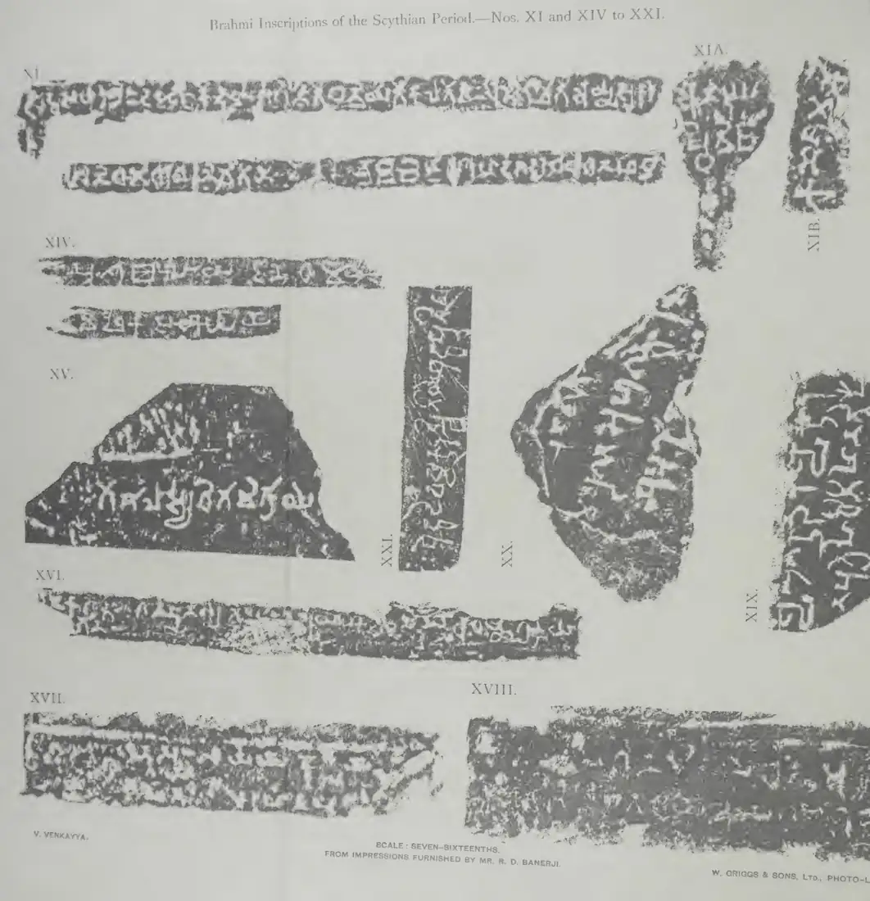
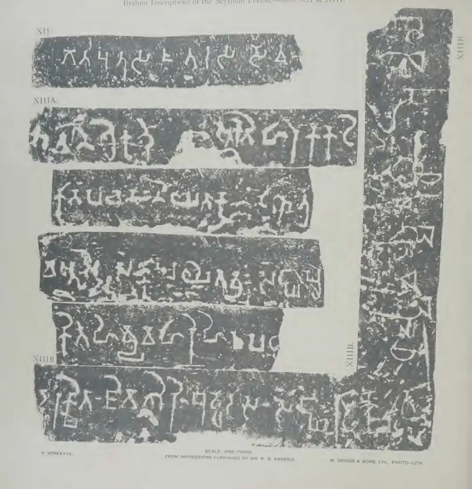
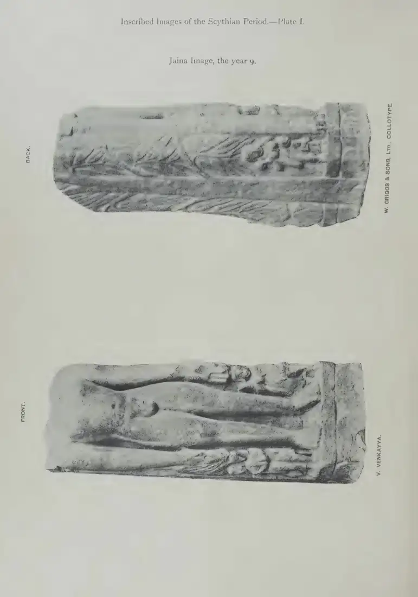
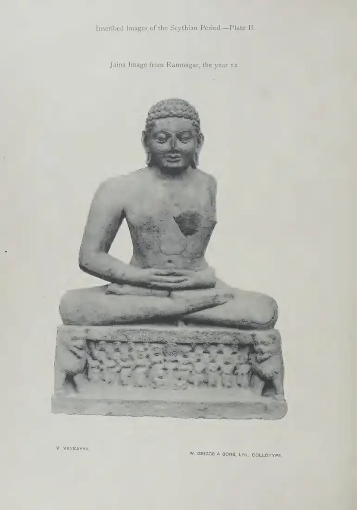
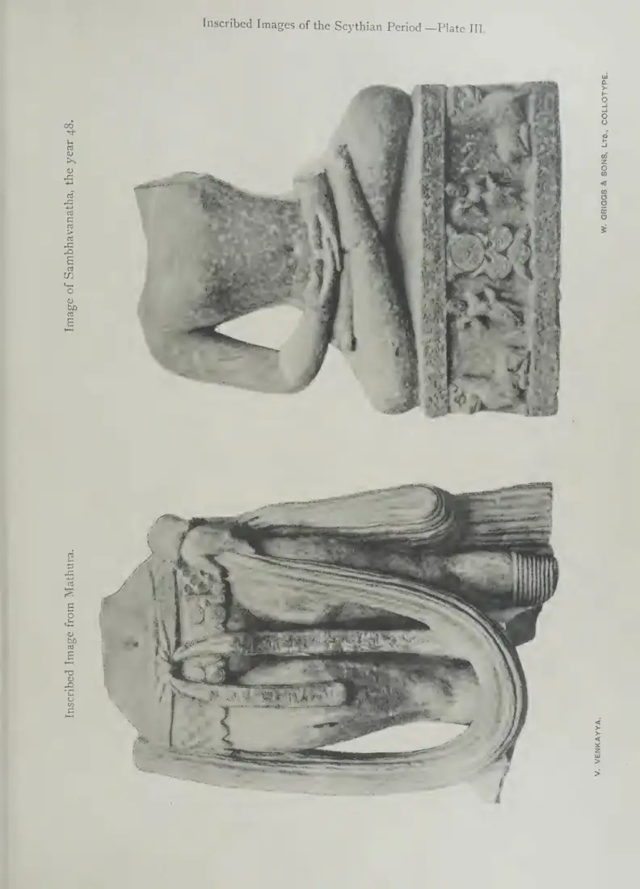
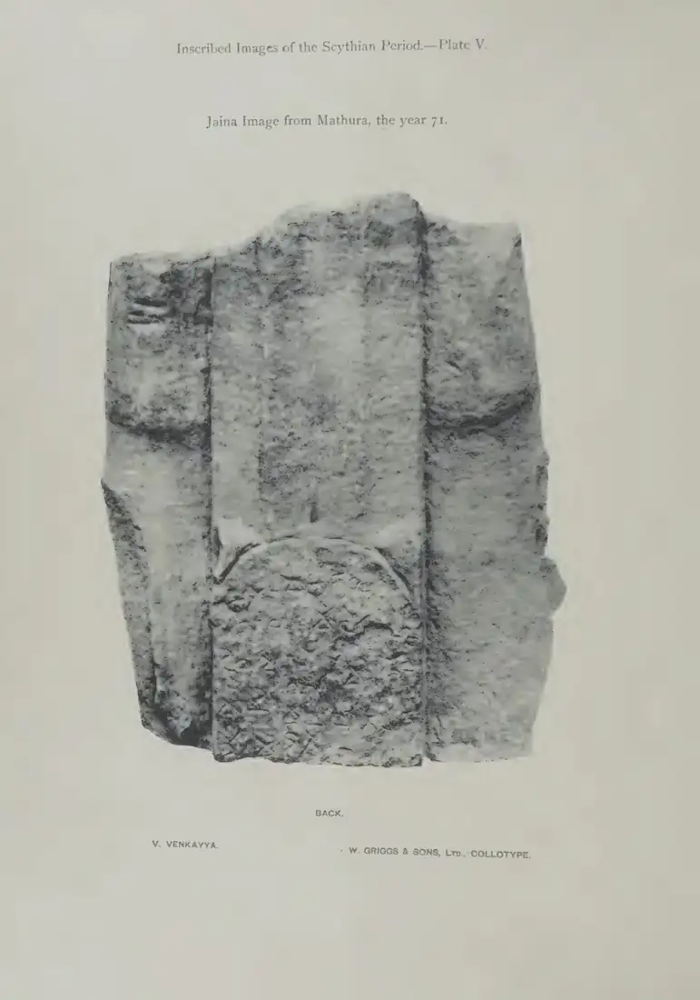
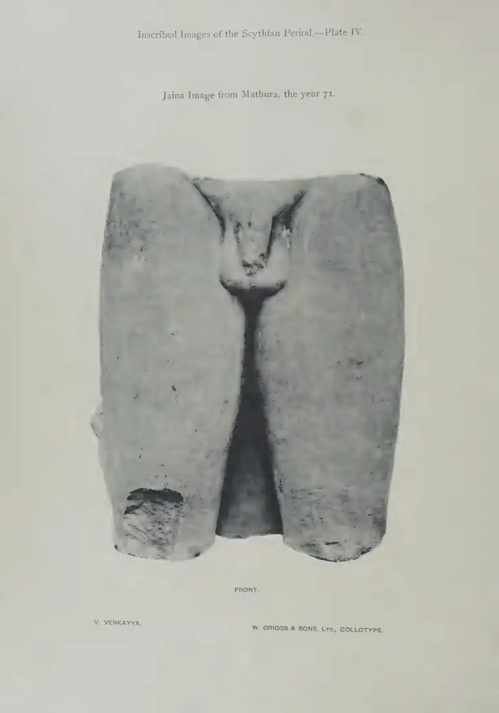
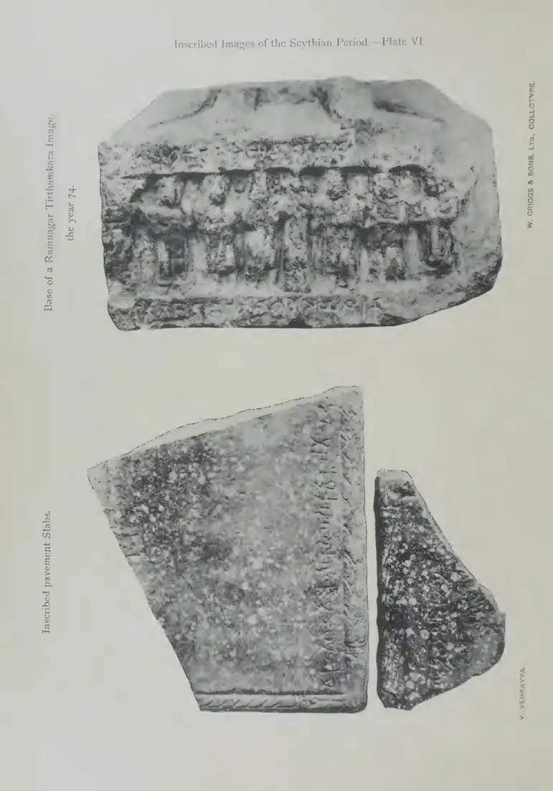
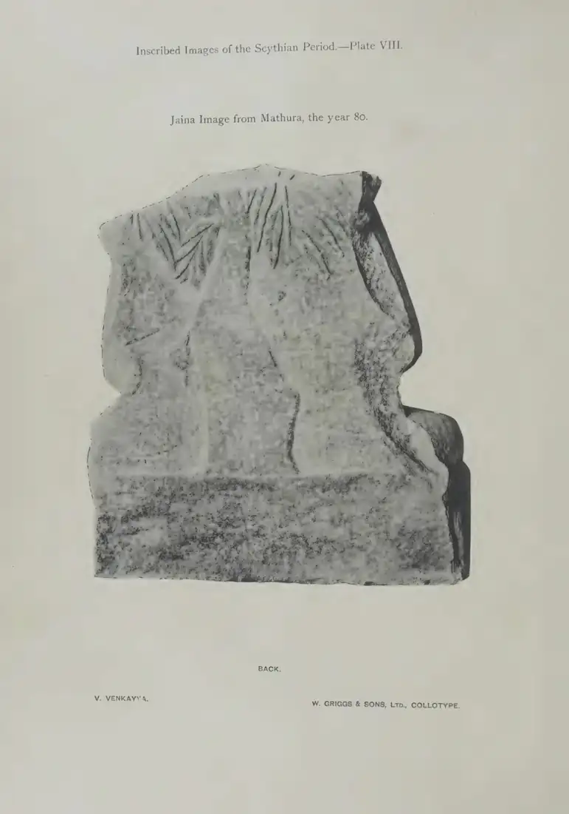
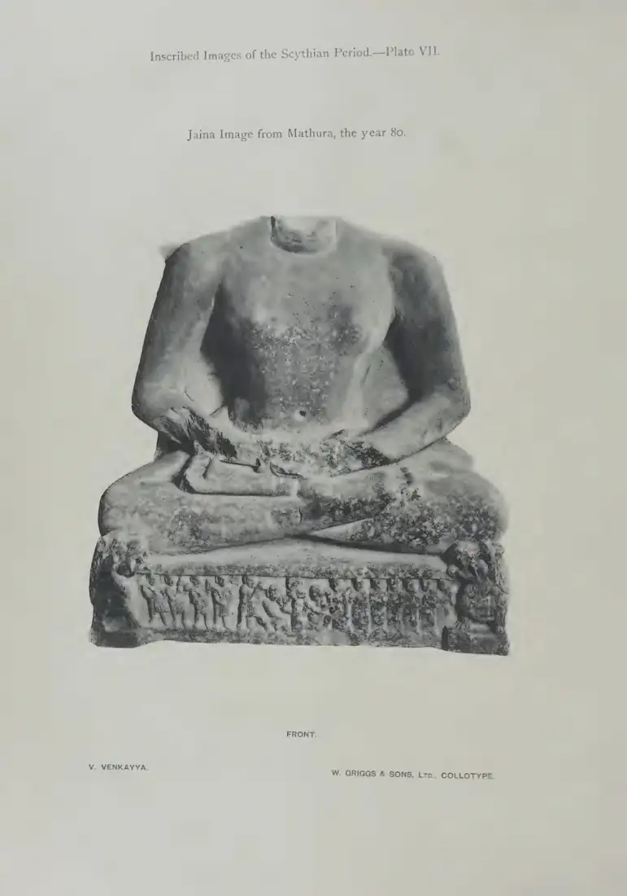

New Brāhmī inscriptions of the Scythian Period
NEW BRAHMI INSCRIPTIONS OF THE SCYTHIAN PERIOD.
BY RAKHAL DAS BANERJI.
The following inscriptions were discovered in the Archæological Section of the Lucknow Museum during the winter of 1908. The existence of unpublished Brāhmi inscriptions in the Provincial Museum at Lucknow was well known to the public, and in 1905 Mr. V. A. Smith obtained a complete set of impressions of them from the Curator. But unfortunately none of these has been published as yet. In 1903 Mr. Smith mentioned four of them which were stated to have been discovered at Rāmnagar, an old fort in the Bareilly District. Two more are said to have been found at Mathurā. I examined the Archæological collection of the Lucknow Museum on two different occasions, once, while collecting materials for my essay on “The Scythian period of Indian history” in June 1905, and again in October 1906. On the last occasion, I came across at least three unpublished inscriptions but could not spare enough time for them. Subsequently, the task of cataloguing the archæological collection of the Provincial Museum was entrusted to me by Dr. J. Ph. Vogel of the Archæological Survey and I had occasion to go through the collection slowly and carefully. The result was the discovery of a number of dated inscriptions and important modifications in the readings of three published ones. The catalogue is not expected to be out soon; so I am placing the newly discovered records before the public as early as possible. The majority of sculptures in the collection of the Lucknow Museum belong to the Scythian period and were discovered by Dr. A. Führer, Ph.D., of the Archæological Survey. The collection also contains a large number of Mathurā
1 These four words are a subsequent addition; see above, p. 104, note 1. Compare Brown's Telugu Dictionary, s. v. salaga.
2 This officer is probably identical with the Jayasēna who wrote another grant of Vikramāditya I., Journ. Bombay Branch R. As. Soc. Vol. XVI. p. 239.
3 On this term see Dr. Fleet's remarks, above, Vol. VII. p. 183 ff.
Plate 1 is bound after this page.
Plate 2 is bound after this page.
sculptures discovered and figured by Growse and others which were presented to the Agra Museum. The collection thus comprises the following materials :—
- (1) Some of the sculptures collected by Growse and other local officers of the Mathurā District up to the year 1886.
- (2) The sculptures discovered during the excavations carried on by Drs. Führer and Burgess at Mathurā during the years 1888-96.
- (3) The sculptures discovered by Dr. Führer at Rāmnagar, the ancient Ahichchattra in the Bareilly District in the winter of 1891-92.
None of the inscriptions from Rāmnagar have ever been properly edited. Translations of three of them have appeared in Dr. Führer's Report of the Epigraphical Section for 1901-02, out of which only one has been found. The rest could not be traced either in the galleries or the Taḥkhana of the Lucknow Provincial Museum.
Fourteen out of the twenty-one inscriptions edited here are absolutely new. The late Dr. Bühler published three inscriptions with facsimiles and the rest have been casually noticed or edited by Messrs. Growse, Smith and others. Those which have been already edited by Bühler are republished because, on examining the original, I found that his readings required considerable modifications. Two of the inscriptions (Nos. II. and VI.) were published by Growse with facsimiles in his Mathura.
The excavations at Rāmnagar have yielded some important records. One of them (No. I.) mentions the territorial name Pañchāla, while another inscription (No. XVI.) evidently from the same place refers to the name of the capital city [Adhi]chchhattra. The identity of Rāmnagar with Ahichchattra seems to be certain.
The language of the inscriptions is corrupt Sanskrit. I am indebted to Mr. Marshall for the photographs published here. They were taken by his photographer Babu Brajendra Nath Dey last winter.
The back views of two images, viz. that of the year 9 (Plate I.) and of the year 80 (Plate VIII.), show the deterioration of the Mathurā school of sculpture. The subject is the same in both cases, viz. a tree with flowers. The earlier sculpture shows a tall tree with a graceful trunk and proportionate flowers and leaves. But the later sculpture is ugly and disproportionate. No other Mathurā sculpture in the Lucknow Museum bears any carving on its back though many of them are carved in the round.
I.—INSCRIPTION ON A COPING-STONE.
The inscription was found on the top of a split coping of yellow sandstone which was used as a prop to a large “tablet of homage.”1 It was completely hidden under the large slab and was discovered when the latter was being taken out to be cleaned. The sculpture came most probably from Rāmnagar, the ancient Ahichchattra, in the Bareilly District. The Curator's Report for the month of April 1892 mentions “1 coping stone with inscription of the Saka era (dated Samvat 5) . . . . Excavated from the old site of a large Buddhist temple at Ramnagar, Rohilkhand.”2 Dr. Führer most probably took the word Pāñchālīye ‘of Parñchāla’ in line 8 for a date. The alphabet belongs to the class which Bühler called Kshatrapa characters. They are older than what Messrs. Vogel and Lüders style Early Kushana. The inscription is dated in the first year of the reign of a king (?) whose name is lost.
1 V. A. Smith's Jaina Stupa, pl. VIII.
North-Western Provinces and Oudh Provincial Museum Minutes, Vol. V. p. 5, App. A.
TEXT.
| 1 | . . . . . | [Nama] bhaga[va] . . . |
| 2 | . . . . . | bughara . . . |
| 3 | . . . . . | [va*]rshē pratha[mē] . . . . . |
| 4 | . . . . . | [di*]vasē 10 1 . . . . . |
| 5 | . . . . . | [Dhru ?]va-mitrasya pra[pautrēṇa*] . . . . . |
| 6 | . . . . . | sya pautrēṇa Śau . . . . . |
| 7 | . . . . . | Bhargavi-putrēṇa . . . . . |
| 8 | . . . . . | su Pāmchāliyē . . . . . |
| 9 | . . . . . | sthitēna hāti . . . . . |
| 10 | . . . . . | kāyām patitaḥ . . . . . |
| 11 | . . . . . | itaḥ sthitē[na] . . . . . |
Remarks.
1. The proper right half of the inscription is entirely lost. The first two lines have lost two syllables each at the end, while in the third and fourth two or three syllables are completely gone at the beginning of the portion extant.
2. The palatal śa which occurs only once is archaic in form and the subscript ya which occurs twice (ll. 5 and 6) is tripartite. The cross-bar of the lingual sha in the third line does not touch the left vertical.
3. The secondary long ī is expressed by two vertical strokes slightly inclining to the proper left (ll. 7 and 8). The ē is expressed by the lengthening of the mātrā towards the proper right as in Maurya Brāhmi, but the ā is expressed differently by a slightly curved stroke to the proper left as in the Kushaṇa script. The secondary au occurs twice in line 6 and does not differ much from the form found in the Allahabad inscription of Samudra Gupta.
4. The date is given in words with the exception of the day which is expressed by numerals in common use during the Scythian period.
5. Two uncommon forms of the letter ta occur in line 10. The place of the mātrā is occupied by a cube so common in the “boxheaded” Gupta and the Chitravarṇa alphabets.1
6. The visarga, which is very rare in cognate inscriptions, occurs twice, once in line 10 and again in line 11.
7. The ya when it occurs singly looks like the Kharōshthi syllable me.
8. The name of the great-grandfather of the donor seems to be [Dhru]vamitra. The restoration is based on Cunningham's readings of some of the coins of Pañchāla.2
TRANSLATION.
“Adoration to the divine . . . . . in the first year . . . . .
. . . . . (the month of) . . . . . the eleventh day . . . . .
. . . . . by the son of a Bhargavi (a mother of the Bhārgava gōtra), the grandson of . . . . . (and) the great-grandson of [Dhru]vamitra . . . . .
. . . . . (which) stood at . . . . .
. belonging to the country of the Pañchālas . . . . . fallen in the . . . . .
. . . . . kā . . . . . which stood here.”
1 Gupta Inscriptions, p. 234, pl. XXIII. and pp. 235-249, pl. XXXIV.—VI.
2 Cunningham, Coins of Ancient India, pp. 81 to 84.
Plate 3 is bound after this page.
II.—INSCRIPTION ON THE BASE OF A BÖDHISATTVA IMAGE.
This fragment was discovered, according to Growse, in a mound near the Circular Road at Mathurā.1 The language is corrupt Sanskrit and the characters are neat and well incised. They belong to the early Kushana period. The important point about this inscription is that it is a Bödhisattva image and not a Buddha image as Growse calls it. The inscription consists of a single mutilated line on the upper rim of the pedestal (Lucknow Museum Catalogue No. B-18.)
TEXT.
. . . . . varshā māsē 2 divasē 6 a[syām pūrvvāyām] . . . . .
. . . . nēna Böd[dh]isat[v]ō p[r]atis[th]āpitō mā[tā pitihi sa]hā
. . . . .
TRANSLATION.
. . . . . “the second month of the rainy season, the sixth day, on that (date specified as) above . . . . . a Bödhisattva (image) was set up by . . . . . na together with (his) mother (and) father (and) . . . . .”
The pedestal is one of the finest pieces of carving turned out by the Mathurā school of sculptors. It represents two men of high rank sitting on a series of steps apparently conversing with each other. The heads of these figures are slightly damaged, but the execution is very fine. The mutilation of the first few letters of the inscription and the loss of the main figure is greatly to be deplored, as they would have been very important for the history of Indian sculpture.
III.—INSCRIBED JAINA IMAGE, THE YEAR 9.
Nothing is known about the findspot of this image. It stands in the Jaina section of the Lucknow Museum, and, judging from its workmanship, is most probably a product of the Mathurā school. The discovery of the Bödhisattva images of Sārnātih and Śrāvasti has made us chary in the matter of assigning findspots of antiquities extempore. No references either to the sculpture or to the inscription have been found in Dr. Führer's Annual Reports or in the Minutes of the Lucknow Museum. The image is headless and belongs to the Digambara sect (Plate I., Front). The Jina evidently stands on a cushion placed on an opening lotus. To his proper right two men are standing with hands folded in adoration and their backs turned towards each other. To the proper left a female figurine stands with a flywhisk (?) in her hands. The image is carved in the round. On each flank is a tall slender pilaster with a bell shaped capital and a square abacus which again bears a couple of rosettes on its rim. The pilaster on the proper left has been damaged by the incision of a square mortise hole. The reverse is occupied by the representation of a tall tree with bunches of small four petalled flowers which resemble the aśōka blossom. A female stands to the proper left of the tree holding a garland in the right hand, while in front of her a child stands with hands folded in adoration. To the right of the tree is a vessel made of leaves containing a garland and by its side a male is standing with clasped hands (see pl. I.).
The inscription consists of three short, irregular lines, of which one is incised on the edge of the cushion and the others on the lotus petals; two short fragmentary lines are incised between the feet of the Jina. The language is the usual corrupt Sanskrit common in inscriptions of this kind and the characters are of the Northern Indian type of the Kushana period. The epigraph is dated in the year 9 of the Kushana era and must probably be referred to the
1 Growse's Mathura (2nd edition) p. 106, and plate facing p. 103.
reign of the emperor Kanishka. Another record of the same date mentioning the name of Kanishka is already known,1 though its present locality is indefinite. The subjoined inscription records the erection of the image by a female named Gahapalā at the request of the venerable Tarika.
TEXT.2
- 1 Siddham Sam 9 he 3 di 10 Gra[ha]m[i]trasya dhitu Śivaśirisya vadhu Ekrađalasya
- 2 Koťiyātō gapātō [A]rya Tar[i]ka[s]ya kutū[m]biniyē
- 3 Ĵhaniyātō kulātō Vair[ā]tō [šākhā]tō [ni]va[r]tanā Gahapalāyē dati.
Remarks.
- 1. The first syllable of the word Śivaśiri may also be read as Avaśiri.
- 2. The word Ekrađalasya may also be read Ekradalasya. The letters are of the ordinary crude form, so common in similar inscriptions on images from Mathurā.
- 3. It seems that the lotus petals were carved after the incision of the inscription. The loss of the letter sa in the word Tarikasya can hardly be otherwise accounted for.
- 4. The word šākhatō has almost entirely vanished on account of the attempts of the mason employed by the Lucknow Museum authorities to remove the cement from the inscribed portion.
- 5. The reading of the last two words of the third line is uncertain. A copious use of cement has made them almost illegible.
TRANSLATION.
“Success. In the year 9, the third (month) of winter, the tenth day; the gift of Gahapalā, the wife of Ekrađala, the daughter-in-law of Śivaśiri and the daughter of Grahamitra, at the request of the venerable Tarika out of the Koťiya gaṇa, the Ĵhaniya (Sthāniya) kula (and) the Vaira (Vajrā) šākhā.”
The inscription between the feet of the Jina consists of two short lines :—
- 1. Arya [A]gha-
- 2. masya śiśini
and seems to refer to the donor of the image. The form of the letter ma in the second line is unusual as it is more common in the inscriptions of the Gupta period.
TRANSLATION.
“The female discipline of the venerable [A]ghama.”
IV.—INSCRIBED JAINA IMAGE, THE YEAR 12.
This inscription consists of 4 short mutilated lines, two of which are incised on the rim of the throne, on which the Jina is seated and the other two on the base. A large part of the
1 A. S. R. Vol. III. p. 31, pl. XIII. No. 4.
2 The lines of the inscription are transcribed here as they appear at first sight. But the word kutūmbiniy is far removed from Ekrađalasya with which it has to be taken. Again the word nivartanā is also similarly removed from Tarikasya. Perhaps the engraver intended that the inscription should be read in the following order :—(1) Kutumbiniyē, (2) Gahapalāyē dati is engraved in two lines immediately below Ekrađalasya and may be read with it. Similarly (1) Koťiyātō gapātō (2) Ĵhaniyātō kulātō Vairātō [šākha]tō written in two lines immediately below the first half of the first line may be taken as one section and the passage (1) Arya Tarikasya (2) nivartanā engraved in two lines as a separate section. Lines 2 and 3 of the text would thus be split up into three sections each consisting of two lines.
Plate 4 is bound after this page.
left arm of the image is missing. The Jina is seated in the dhyānamudrā posture on a throne supported by a couple of lions standing (Plate II). The intervening space between the lions is occupied by a bas-relief. In the centre of the bas-relief is a wheel on a short Indo-Corinthian pilaster with two capitals and a square abacus, while a devotee is seated on the ground on each side. To the right of the pillar ten women are standing in two rows with garlands in their hands and to the left a group of ten men in similar positions. So far as I know, the usual order has been reversed in this case. The majority of bas-reliefs on the pedestals of images from Mathurā show the men on the right and the women to the left of the wheel.
Nothing is known about the provenance of this image. It is now standing on a masonry pedestal without a label close to the entrance of the Jaina section. In his report for the month of April 1892, Dr. Führer, as the Curator of the Lucknow Museum, reports the presentation of "1 pedestal (sic) of a statue of a Tirthamkara, inscribed Śaka-Sainvat 10, excavated from the ancient site of a Digambara temple at Ramnagar in Rohilkhand."1 It is possible that our image is referred to by these words of Dr. Führer.
TEXT.
1 Sam 10 2 va 4 di 10 [I] ētasya purvvāyāṅ Koṭṭiyātō [ga]patō
Ba[m]bhadāsi[yā]tō kulātō U[chēna]-
2 garitō śākhātō gani[s]ya Aryya Puśi[lasya] śiśini Datila . ti Harinan[di]sya
bhaginiyē ni[var*]-
3 tanā sāvikānām vaddha[ki]ninaṅ Jinadāsi Rudradēva Dāttāgālā Rudradē[va]-
sāmi[nā] Rud[ra] . . . [Gahami]tra . . . . .
4 Kumāraśiri Vamadasi Hasti[sē]nā Grahaśiri Rud[r]adatā Jayadāsi Mit[r]aśiri-
. . . . .
Remarks.
1. The symbol for 10 is peculiar. This form seems to show the transition between the form in No. I and that in No. V.
2. The akshara ki of vaddha[ki]ninaṅ seems to be corrected by the engraver himself from ku.
3. The word Dāttāgālā is most probably the name of a village. It occurs in an inscription on a colossal image of Buddha from Bōdh Gayā now in the Indian Museum.2
TRANSLATION.
"In the year 12, the 4th (month) of the rainy season, the 11th day, on that (date specified as) above,— (an image was set up) by the (following) lay-hearers3 (who belonged to the caste) of carpenters, (viz.) Jinadāsi, Rudradēvā,4 Rudradēva-sāmi (Rudradēvasvāmin) of Dāttāgāla, Rudra . . . . Gahamitra (Grahamītra) . . . . . Kumāraśiri (Kumāraśri) Vamadāsi (Brahmadāsi or Vāmādāsi) Hastisēnā, Grahaśiri (Grahaśri) Rudradatā (Rudradattā), Jayadāsi, Mitraśiri (Mitraśrī) . . . . at the request of . . . . the sister of Datila . . Harinandi, the female pupil of the venerable Puśila out of the Koṭṭiya gaṇa, Bambhadāsiya (Brahmadāsiya) kula and the Uchēnagari (Uchchānagari) śākhā.
1 N.-W. P. and Oudh Provincial Museum Minutes, Vol. V. p. 6, Appx. A.
2 J. A. S. B. Vol. XXXIII. p. 177, and Mitra, Buddha Gaya, p. 192.
3 Vaṭakino (=vadṭhakino) occurs in one of the Sāñchi inscriptions (ante, Vol. II. p. 389) in the sense of 'carpenter.' Vaṭhai in Hindi means 'carpenter.'
4 It is also possible that the two names Jinadāsi and Rudradēvā have to be taken as one name Jinadāsi-Rudradēvā. The mother's name might have been prefixed to distinguish her from others bearing the name Rudradēvā. The same may be the case with some of the other names in this inscription.
V.—INSCRIBED IMAGE OF SAMBHAVANĀTHA, THE YEAR 48.
This image was found in one of the smaller rooms of the Jaina section of the Lucknow Museum without any label or number. There is no particular mention either of the image or of the inscription in the Minutes or the Annual Reports of the Lucknow Provincial Museum.
This is the only known statue of Sambhavanātha (Plate III.), the third Jina, discovered at Mathurā during this period. Figures of Rishabhanātha, Nēminātha, Pārśvanātha and Mahāvira have been met with. It is to be noted that Jaina images of the Scythian period cannot be identified satisfactorily unless the names are mentioned in their inscriptions. Most probably, distinctive symbols (chihna) were assigned to the respective Jinas at a much later period. Those distinguishing symbols have not been found in any Jaina image of the Scythian period discovered up to date. The earliest known Jaina statue with a distinctive symbol is the image of Rishabhanātha from the Kañkāli Tilā mound near Mathurā figured in Mr. V. A. Smith's Jaina stupa (Plate XCVIII). Unfortunately it is uninscribed, but may be assigned to the 4th or the 5th century of the Christian era on account of its technique.
The head and one arm are broken. The Tirthañkara is seated in the dhyānamudrā posture on a throne supported by a couple of lions. The space under the throne between the lions is occupied by a bas-relief, showing the Triratna symbol resting on a small wheel and supporting a larger one. Two conches are leaning against the smaller wheel, while a small leaf is added to each side of the larger wheel. The grouping is exactly the same as on the Jaina pedestal, now in the Lucknow Museum, dedicated in the year 49.1 A male figure stands to the right of this group of symbols, and a female to the left. They hold flowers in their right hands while their left hands are akimbo.
The inscription consists of four short lines.
TEXT.
- 1 Mahārājasya Huvakshasya sa[m]vacbar[ē] 40 8 va 2 d[i] 10 7 ētasya puvāyam K[oṭṭi]yē [gaṣē] Bama[dā*]
- 2 [si]yē k[u]lē Pachanagariyē śākāya Dhujhavalas[ya] śiśin[i]y[ē] Dh[ujha]-[ś]iriy[ē] nivatana
- 3 [Bu]dhukasya vadhuyē Śavatrana (?) pōtr[i]y[ē] Yaśāy[ē] dana Sa[m]bhavasya proṭima pra-
- 4 ta(ti)stape(pi)ta.
TRANSLATION.
“In the year 48, the 2nd (month) of the rainy season, the 17th day, of the Mahārāja Huvaksha; on that (date specified as) above, an image of Sambhava was set up by Yaśā, the grand-daughter of Śavatrana (?) and the daughter-in-law of Budhuka, at the request of Dhujhaśiri (Dhurjaśri), the female discipline of Dhujhavala (Dhurjavala) out of the Koṭṭiya-gaṇa, Bama[dā]siya (Brahmadāsiya) kula and Pachanagari (Vajranagarī śākhā.
VI.—MATHURĀ BUDDHIST IMAGE INSCRIPTION, THE YEAR 51.
The discovery of this inscription was made known to the public by Mr. Growse in 1870. It was found in one of the Jamalpur mounds2 on the pedestal of an image, most probably of Buddha, of which only the feet are extant. A male kneels to the proper right with some object, probably a bag, in his hand. It consists of three lines, of which the proper left half of
1 Above, Vol. II. p. 204, No. XX. and p 321, pl. IV; Vol. IX. pp. 244-45.
2 Growse's Mathura, 2nd edition, p. 107.
Plate 5 is bound after this page.
the first two lines are almost illegible. It records the erection of an image by a bhikshu named Buddhavarman during the reign of Huvashka in the fifty-first year of the Kushaṇa era in a temple built by the king himself (Mahārāja Dēvaputra-vihārē). This temple is most probably the same as that mentioned in a later inscription.* The characters of the subjoined inscription are very neatly incised.
TEXT.
- 1 Mahārajasya Dēvaputrasya 1Huvashkasya savatsarē2 50 1 hamanta māsa 1 d[i]va[sa] . . . [as]y[ām] . . . pu[rvvā]yām [bhi]kshunō Buddhavarma[ṇaḥ]3 [Śakya?] . . .
- 2 pratimā pratishtāpit[ā] sarva-Buddhapūjartha[m]4 an[ē]na [dē]yadharma-parityāgēna5 Upadhyāyasya Sa[m]ghadāsasya [nirvāṇavā]ptayē=stu [mā]tāp[ita]
- 3 Buddhavarmasya sarva-d[u]khōpaśam[ā]ya sarva-satva-hita-sukhārtha[m] [M]ahārāja Dē[vaputra-vi]hārē.
TRANSLATION.
“In the year 51, the 1st month of winter, the . . . . day, on this (date specified as) above,—an image of Śākya[muni?] . . . . . (the gift) of the bhikshu Buddhavarman, was set up in honour of all the Buddhas. Let the bestowal of this religious gift be for the attainment of nirvāṇa by the Upadhyāya Samghadāsa, and for the cessation of unhappiness for Buddhavarman [and his parents] . . . . . (and) for the welfare and happiness of all beings. In the vihāra of the Mahārāja Dēvaputra.”
The transcript of this inscription printed in my paper on “Mathura inscriptions in the Indian Museum” (Jour. and Proc. A, S. B. Vol. V. p. 243) should be corrected in accordance with the foregoing text and translation.
Remarks.
- 1. The king's name is undoubtedly spelt as Huvashka; cf. variants Huvaksha, Hushka, Huksha, etc.
- 2. There are no traces of the anusvāra on the stone.
- 3. The possessive case ending is expressed in two ways:—varma[ṇaḥ] and -varmasya. But it is to be noted that the visarga is not legible.
- 4. The final form of ma is important, as this is the earliest case known in Northern Indian inscriptions; above, Vol. I., p. 389, No. XIV.
- 5. This form occurs in another inscription of the same period (J. B. B. R. A. S. Vol. XX).
VII.—INSCRIBED JAINA IMAGE, THE YEAR 58.
The inscription has already been published by the late Dr. Bühler (No. 42 of Prof. Lüders' List, p. 8 f. above). When I was examining the characters of the inscriptions of the Scythian period, I was struck by the use of the word haṇa† in two dated inscriptions:—
- (1) The inscription of the forty-fourth year of Huvishka† and (2) that of the eightieth year of Vāsudēva.§
* I. A. Vol. XXXIII. p. 101, No. II; above, Vol. IX, pp. 243 and 245.
† The use of the word between the year and the month of a dated inscription can have no significance. The word occurs also in the Mathurā lion capital inscriptions (ante, Vol. IX. p. 141). Here however the context is different and Mr. F. W. Thomas has taken the word to denote a proper name.
‡ Ante, Vol. I. p. 387, No. 9 and Plate.
§ Ibid. p. 392, No. 24 and Plate.
On examining the originals carefully I found that the date in one of them is not forty-four but fifty-eight, expressed in words. The following considerations led me to this conclusion:—
- (1) The first syllable after the word sava[tsa]re has been read by Dr. Bühler as pta or the numerical symbol for 40. But it would be better to take it as a form of the letter a (cf. above, Vol. VIII. plate facing p. 176, i, f.).
- (2) The second syllable has been taken by Dr. Bühler to be a numerical symbol. But it is evidently the compound letter shṭa. The plate published along with this paper was prepared from an impression taken under my personal supervision and shows the letter shṭa better than the facsimile issued with Vol. I. of this Journal.
- (3) The third letter was taken by Dr. Bühler to be ha but the absence of the horizontal stroke at the top of the vertical line on the proper right shows that it is pa. The left hand vertical line is slightly curved, but it should be borne in mind that the characters of Jaina inscriptions of the period are always cursive;* cf. the ha of Maharaja in the same line.
The word paṇa occurs in two other Brähmi inscriptions from Mathurā published by the late Dr. Bühler. One of them is dated in the year 50 (ante, Vol. II. p. 203, No. XVII), which is preceded by the word paṇa and the other in the year 52, to which is prefixed the word dvāpaṇa (ibid. No. XVIII). In the present inscription we have got ashṭapana, which I have rendered by 'fifty-eight.' The word paṇa is apparently an abbreviation of the Pāli paṇṇāsa 'fifty.' In the inscription of the year 80, where the word paṇa also occurs, according to Dr. Bühler's text, it is a misreading for hamata, as I shall show later on in this paper.
With my corrections the text of the subjoined inscription runs as follows:—
- 1 Sdha[m]1 Nama Śara[sa]tama Maharajas[ya] Huvakshasya sa[m]vasare ashṭapana gra[sya] masa 3 [da]visa2 2 ē[ta]-
- 2 [syām] p[u]rva[yām] Pe (?) . . . . gane(?) Aryachēṭiyē3 kulē Haritamālakaḍhi[yātō] śā . . . . . [vā]chakas[y]a Hag[i]n[ā]dis[y]a śi[sō]gana . . . . Na(?)gasēnō(?) danam (?).
Remarks.
- 1. This word occurs in many other cognate inscriptions. There is a symbol preceding na of nama which I cannot explain.
- 2. Perhaps the word was pronounced davisa as is still the case in Bengal and Assam; read divasa.
- 3. There is an unexplained symbol after the akshara yē. Perhaps it is due to a crack in the stone.
TRANSLATION.
Success ! Adoration ! In the year 58 of the most illustrious (?) great king Huvaksha, in the 3rd month of summer, on the 2nd day. On that (date specified as) above, the gift of Nagasēna (?), the pupil of Haginadi (Bhaganandi ?) a preacher out of the . . . . . gana, the Arya-Chēṭiyā (Āriya-Ohēṭika) kula (and) the Haritamālakaḍha (Haritamālagaḍhī) śā[khā].
VIII.—INSCRIPTION ON A JAINA IMAGE FROM MATHURĀ, THE YEAR 71.
The discovery of this image was announced by Dr. Führer in his Annual Progress Report for the year 1890-91 (p. 17) and in his Annual Report† of the Provincial Museum for the
* Ind. Ant. 1908, p. 51.
† N.-W. P. and Oudh Provincial Museum Minutes, Vol. III. p. 233.
Plate 6 is bound after this page.
Plate 7 is bound after this page.
year 1891-92. But the inscription on it has neither been published nor noticed as yet. It is incised on the square base of a pilaster made out of the back of a Digambara Jaina image (Plate V). Only the waist and the thighs of the Jina are extant (Plate IV). The pilaster on the reverse is most probably the staff of the umbrella under which the image originally stood. Such cases are by no means uncommon in the Mathurā sculptures of the Scythian period. The inscription, though fragmentary, is an important one. It presents a large number of difficulties both in decipherment and translation. The most important part however is the date which is fairly legible.
TEXT.
1 Sa[m] 70 1 va 1 di 10 5
2 e (?)taye puvayē ha-
3 tiya(?) Muñaśimitā (?) ye (?)
4 Minirava sushōti dhitu
5 H[ēmad]ēva [saya] . . . . .
Remarks.
- 1. The anusvāra is indistinct.
- 2. The vowel e is unlike any Brāhmi letter but resembles the Kharōshthi va.
- 3. The second letter in the third line is also new. It resembles the symbol for 10 to some extent, but the presence of a numerical symbol at this place cannot be explained.
- 4. The remaining syllables in the third line seem to constitute a proper name with the genitive case ending. The letter ña is rare in Mathurā inscriptions, although it is to be found in the inscriptions of the Western Satraps.
- 5. Of more interest is the form sushōti in the next line. The ō in shō is formed by the combination of a and u and the affix ti is quite new. It resembles to some extent the Bengali affix ta as in māmāta; "maternal uncle's son," pisāta, "son of a paternal aunt." The word probably is an apabhraṅśa of the Sanskrit svasrīyā and the whole phrase most probably means "sister's daughter's daughter:"
TRANSLATION.
"In the year 71, the 1st (month) of the rainy season, the 15th day; on that (date specified as) above, . . . . . of Muñaśimitā (?) . . . . . the sister's daughter's daughter of Minirava . . . . . of Hēmadēva.
IX.—INSCRIBED CHATURMUKHA FROM RAMNAGAR, THE YEAR 74.
The discovery of this inscription was announced by Dr. Führer in his Progress Report for the year 1891-92. But all the details have been omitted. The inscription is incised on four sides of the pedestal of a Chaturmukha or four-fold image of a Tirthainkara, as Dr. Bühler used to call them (Plate VI). Each of the four faces of the pedestal bears a bas-relief. On the larger faces, the bas-relief consists of a wheel on an Indo-Persepolitan pilaster in the centre with three devotees, standing with folded hands, on each side. The bas-relief on the smaller faces is almost similar and consists of two devotees only on each side of the pillar.
The inscription consists of two lines—more or less mutilated—on each face. The second line of the third face has broken away. The epigraph records the dedication of some object the name of which is lost, in the 74th year, presumably of the Kushana era.
TEXT.
A. 1. [Sam 70] 4 gra 1 di 5 Aya Varanatō gana[tō] . . . .
A. 2. [ku]latō Vajanakaritō sākha[tō] Ayaśirik[ātō] . . . .
B. 1. . . . nadhanasya vāchakasya śiśiniyē A[ryya] . . . .
B. 2. . . . sasa . . . .
. . . .
C. 1. Gahavalāyē paṇatidhariyē śiśiniyē Aryadāsiyē . . . .
C. 2. . . .
. . . .
D. 1. . . [deva]sya kuṭu[m]biniyē Dharavalāyē dati . . . .
D. 2. . . . saśuyē . . . .
. . . .
Remark.
The symbol for seventy is indistinct on the impression; but can be deciphered on the original stone.
TRANSLATION.
(In the year) [7]4, the 1st (month) of summer, the 5th day . . . .
. . . . the gift of Dharavalā, the wife of . . . . dēva
. . . . [at the request of] . . . . Aryadāsi (Aryadāsi), the female pupil, who obeys the command of Gahavalā . . . . of . . . .
. . . . sa . . . . the venerable . . . .
. . . . female pupil of the preacher . . . . nadhana . . . .
. . . . out of the venerable Varaṇa (Vāraṇa) gaṇa, the . . . . kula, the Vajanakari (Vajranagarī) sākhā (and) the Ayaśirika (Āryaśrīka) [sambhōga].
X. —INSCRIBED IMAGE FROM MATHURĀ, THE YEAR 80.
This image was discovered in the Kañkāli mound near Mathurā (Plates VII and VIII), and the inscription on it was published by Dr. Bühler (No. 66 of Professor Lüders' List, above, p. 13).1 This is the other inscription referred to above (p. 113) in which, according to Dr. Bühler, the word haṇa occurs. On comparing the original with the photo-lithograph published by Dr. Bühler it was found that the words haṇa va 1 as read by Bühler are nothing but hamava 1, which probably stands for hamata 1.
TEXT.
1 Sdhi2 Maharajasya V[ā]sudēvasya Sa[m] 80 hamava 1 di 10 2 ētasa purvvāyām
sā[va]ko [Sa]3 . . . .
2 dhita Sa[m]ghanādhisa4 (?) vadhuyē Balasya . . . .
Remark.
The second letter of the word hamava is sufficiently clear in Dr. Bühler's facsimile and cannot be anything else but the Brāhmi letter ma. It will be observed that the third letter resembles va but the base line does not join the left limb. This too is visible in the photograph. It is due, most probably, to the mason's carelessness.
1 Above, Vol. I. p. 392, No. XXIV.
2 Sdhi most probably stands for siddham or siddhi.
3 The name of the sāvaka begins with Sa. The second syllable is only partly legible and may be go, but it may also be vo or so.
4 The ā mark is very distinct in the impression.
TRANSLATION.
“Success. In the year 80, the 1st (month) of winter, the 12th day, of the Mahārāja Vāsudēva,—on that (date specified as) above, the daughter of the lay hearer Sa . . . . . , the daughter-in-law of Saṅghanādhi (Saṅghanandin) . . . . . of Bala . . . . .”
XI.—INSCRIBED BAS-RELIEF FROM MATHURĀ, THE YEAR 99.
The inscription is incised along the raised border of a fragmentary bas-relief on yellow sand-stone. The bas-relief consists of two panels with raised borders. The lower one is larger but its lower part is broken. The smaller panel at the top is in good preservation. It consists of a stupa in the centre with two Jinas on each side seated in the attitude of meditation under umbrellas. The Jina on the proper left of the stupa has no umbrella on his head. A seven-headed snake takes the place of the umbrella and shows that it is Pārśvanātha, the 23rd Tirthankara. The inscription is incised on the rims at the top and bottom of this panel.
The lower panel contains the upper part of a woman's figure standing with her left hand on her hips and the right one lifted up. A small inscription consisting of two lines has been incised over her right shoulder (A). To her left stands a nude male figure, evidently an ascetic, with a piece of cloth on his left wrist. In the space between the heads of these two figures occurs the inscription B. Two female figurines are standing to the left of the ascetic and behind them appears the upper part of the figure of a Nāga king under a tree with his hands folded in supplication. On each side of this group is a pillar with a bell shaped capital, of which the one on the left is surmounted by a wheel. A drawing of this bas-relief has been published by Mr. Smith.*
The inscription has already been published by Dr. Bühler† (No. 75 of Professor Lüders' List, above, p. 15) though Mr. V. A. Smith did not notice it at first. The original inscription differs in two or three places from Dr. Bühler's readings.
TEXT.
1 S[i]ddha[m] Sam 90 91 gri 2 di 10 62 Koṭtiyātō gapatō Thaniyātō kulātō Vai[rā]-tō śākhātō Aryya Sura [po] . . . . .
2 [śi]śini Dhama[śi]r[i]yē3 niv[a]rtanā . . . . . 4 Grahadatasya dhi[tā] Dhanahathi . . . . .
A. Anagha [Srē]shṭhi Vijā. B. Kaṇa Ś[r]ama[ṇa].5
Remarks.
- 1. The year is most certainly 99, as has already been recognized by Dr. Hoernle and Mr. V. A. Smith in the J. R. A. S. 1905, p. 152.
- 2. The second of the symbols denoting the date was taken by Dr. Bühler to be 8, but it is similar in all respects to the symbol for six; cf. above, Vol. I., p. 388, No. XII.
- 3. The reading of the third syllable is certain though the cross-bar of śa is not distinct in the impression.†
- 4. I have not been able to make out the aksharas preceding the word grahadatasya.
- 5. The smaller inscriptions are most probably labels and as such are unique among the Mathurā sculptures of this period. Their Sanskrit equivalents are given in Dr. Führer's Annual Report for 1890-1 (p. 3). The bas-relief has not been explained as yet.
* Jaina Stupa, p. 24, pl. XVII. fig. 2, and Lucknow Museum Catalogue No. J-623.
† Ante, Vol. I. p. 392, No. XXII.
‡ [On the plate the reading appears to be Dhāmadharayē.—Ed.]
TRANSLATION.
“Success. In the year 99, the 2nd (month) of summer, the 18th day,—at the request of Dhamaśiri (Dharmaśrī), the female ppil of . . . . Aryya Sura (Arya-Sura) . . . . out of the Koṭṭiya gaṇa, the Thaniya (Sthāniya) kula and the Vaīra (Vajṛā) śākhā.”
“The sinless merchant Vijā (Vidyā).” “The ascetic Kaṇa (Krishna).”
XII.—INSCRIPTION ON A COPING STONE.
Nothing can be said definitely as to the whereabouts of this inscription. It was found without any label in the Jaina section of the Lucknow Museum. The material is red sandstone and the technique is decidedly that of the Mathurā school. The epigraph consists of a fragmentary line incised on the top of a sculpture. The characters are very early and most probably belong to the same period as the earliest inscription from Mathurā.† The epigraph is of some interest, as it contains the word sovaṇ[ika] “goldsmith,” which occurs only once in cognate inscriptions.‡ Unfortunately the word is not completely preserved. The vowel ū which is comparatively rare occurs in this record.
TEXT.
Gotiputrasa Ūtarasa sovaṇ[ika*] . . . .
TRANSLATION.
. . . . of Ūtara (Uttara), the goldsmith, the son of Goti (Gaupti).
XIII.—INSCRIPTION ON A LARGE SLAB OF RED SANDSTONE.
This slab is plain but for the inscription. It is rectangular in size and one corner is broken. Its discovery was announced by Professor Dowson in 1871.§ In 1906 I wrote to the Curator of the Lucknow Museum asking for a couple of impressions of the inscription of Śođāsa which had been published by Dowson along with this epigraph, but I received copies of the subjoined record instead. The characters are about 2 to 3½ inches in height. The inscription has apparently suffered after its removal to the Museum, as the word upathāpīta read by Dowson is no longer complete.
TEXT.
A.
. . . . ñavan[ē] Śrikandē1 (?) stakē2 [v]ihārē Kakaṭikānam pachanah3 niyataka4 . nāña (?) travastussi5 saṅkkālayitavyah Saṅghaprakitēhi vyavahārihi [u]pa[ṭha] . . . .
B.
- 1 [Bu*]d[dha]rakshita—Jivaśiri—Buddhadāsa—Saṅgharakshit[a]
- 2 Dharmmavarmma Buddha . . su[khā] la . . . .
Remarks.
1. The word may be taken to be kanthē but a Śrāvasti inscription (above, Vol. VIII., p. 181) shows an identical form for nḍa.
† Above, Vol. II. p. 198, No. 1.
‡ Above, Vol. I. p. 397, No. XXV. and Ind. Ant. Vol. XXXIII. p. 150, No. 27.
§ J. R. A. S. (N. S.) Vol. V. p. 188, No. 28.
Plate 8 is bound after this page.
- 2. The lower part of the letter sta is damaged. The word may be read as svaka.
- 3. The visarga is distinct but it may also be a punctuation mark.
- 4. There is a short horizontal stroke to the left on the top of the central vertical line. This may be an e mark, but possibly it is due to the mason's carelessness.
- 5. The reading of these six syllables is uncertain. The inscription contains some peculiar words and so I shall have to leave it untranslated.
XIV.—INSCRIBED IMAGE FROM MATHURĀ, THE GIFT OF PUŠABALĀ.
The inscription is incised on the waist band of a female figure in red sandstone. Only the portion below the waist is extant (Plate III). According to Mr. V. A. Smith (Jaina Stupa, p. 56, plate XCIX) the sculpture was discovered in the Kañkāli mound. The drawing published by him is inaccurate. The impression and photograph published herewith will show the details of the discrepancies. Mr. Smith's reading, based on his drawing, is also incorrect. Inscriptions on waist bands are very uncommon in India.
TEXT.
- 1 Puśabalāyē dānē1 Dhama-
- 2 vaḍhakasa [bha]yāyē.
TRANSLATION.
"The gift of Puśabalā, the wife of Dhamavaḍhaka (Dharmavardhaka)."
XV.—FRAGMENT OF AN INSCRIBED PAVEMENT SLAB.
The sculpture on which this inscription has been incised is evidently a fragment of a pavement slab.2 The carving consists of an ornamental border of twisted rope pattern with cylindrical clasps at corners. The accompanying photograph (Plate VI) shows a fragment of another similar sculpture. The inscription on it has been edited by Dr. Bühler (No. 113 of Professor Lüders' List, above, p. 20). The ornamentation is precisely the same, the place of the rope pattern being taken by lotus petals. The upper right hand corner bears some chisel marks apparently unexplainable. But the other sculpture mentioned above most probably affords a means of explanation. The inscription on that sculpture too, which is entire, has been published by Dr. Bühler (No. 119 of Professor Lüders' List, above, p. 21). The ornamentation is precisely the same as in the two fragments published herewith on plate VI. The only difference is that there is a large square hole in the centre of the slab. This, I believe, explains the chisel marks on the larger slab in the photograph.3 This slab, then, must have had a similar hole in its centre. The object of these square holes is not very difficult to describe. Several of the Jaina statues in the Lucknow Museum possess massive tenons under the bases. These tenons were most probably let into the square mortise holes in the pavement slabs. This supposition is strengthened by the fact that the inscriptions on similar slabs are not incised near the centre but along the borders. The majority of images of this period were carved in the round and were placed inside rooms or shrines paved with similarly carved slabs.
TEXT.
Gōsālasyā dhitā Mitrāyē [dānam*].
1 Read dānam.
2 In addition to this there are two other similar inscribed slabs in the Lucknow Museum.
3 [How the chisel marks are explained by the mortise holes is not apparent.—Ed.]
TRANSLATION.
“ [The gift] of Mitrā, the daughter of Gōśāla.”
XVI.—FRAGMENT FROM THE LOWER PART OF AN IMAGE FROM RĀMNAGAR.
The carving of this image is very nearly gone, the outline being barely recognisable. The inscription also is in a very bad state of preservation. It is important as it mentions the name of [Adhi]chchhatra. The inscription consists of a single line.
TEXT.
- 1. . . . . . ṇaka gana (?) Dhanañyanasya ta . . . aya[yē]
. . . [yē A]dh[i]chchhatrakayē . . . . . - 2. [nivar*]tanā.
TRANSLATION.
“ . . . . . ṇaka gana (gaṇa) . . . of Dhanañyana
. . . the venerable . . . . . of . . at the request of . . . . .
[Adhi]chchhatra . . . . . ”
XVII.—FRAGMENT OF A TABLET OF HOMAGE.
This fragment was found in one of the entrances to the Brāhmanical section of the Lucknow Museum. Nothing is known about its provenance. The inscription is full of mortar and is in a bad state of preservation. The characters belong to the early Kushaṇa period.
TEXT.
- 1. . . . . . [Amogha]dattasya bharyāye Kō[ts]iyē
- 2. . . . . . [pratisṭhā]pita . . Arahamta pu[jāyē].
TRANSLATION.
“ [A tablet of homage] was set up by . . . . the wife of [Amogha] datta, . .
. . . in honour of (all) the Arhats.”
XVIII.—INSCRIPTION ON A TABLET OF HOMAGE FROM MATHURĀ.
A photograph and a full description of the subjoined tablet of homage have been published by Dr. Bühler.1 The inscription on it is very faint. I read from the original after bringing it out in daylight and from two impressions made by Munshi Ghulam Nabi of the Archæological Survey, Northern Circle.
TEXT.
- 1. . . . . . Dhanami[trā]yē dhitu [Ara]
- 2. . . . . . vadhuyē āyāga[pa]tō [pa] . . .
TRANSLATION.
“ . . . . . the daughter of Dhanamitrā . . . the daughter-in-law
of . . . . . a tablet of homage [was dedicated] . . . . . ”
1 Above, Vol. II. pp. 311-313.
Plate 9 is bound after this page.
Plate 10 is bound after this page.
XIX.—FRAGMENT OF A PEDESTAL.
This fragment was found in a heap of rubbish which had accumulated under No. XIII. in the Epigraphical Section. Nothing is known about its findspot. The inscription is of interest as it mentions two synonymous words in the same line, viz. natti and pau[ttra].
TEXT.
- 1. . . . . sya [v]rita Ku[tù]kasya ku[tù][mbini*] . . .
- 2. . na putrēhi dhitihi natti pau[ttrēhi*] . . .
TRANSLATION.
“ . . . . the wife of Ku[tù]ka, the chosen . . . . sons and daughters and grandsons (i.e. daughter's sons)1 (and) grandsons (i.e. son's sons) . . . . ”
XX.—INSCRIPTION ON A TRIANGULAR FRAGMENT.
This inscription is of some interest as it contains the number 800 expressed both in words and by numerical symbols, viz. by the symbols for 8 and 100. It was found in the Jaina Section of the Lucknow Museum without any label or number.
TEXT.
- 1. . . . . tata . . . .
- 2. . . . . m=ashṭaśata CVIII gandhi . . . .
- 3. . . . . push[ta] . . . .
XXI.—INSCRIPTION ON A PEDESTAL.
This short inscription is incised on a fragment from a pedestal of yellow sandstone. Nothing is known about its findspot.
TEXT.
Buddhadēvasya kuṭumbiniyē Buddha pratim[ā] . .
Remarks.
- 1. There is a superfluous e stroke over the first letter bu.
- 2. The form of va is peculiar. At first it looked like an inscription in the 7th century character of North Eastern India. But the language and the forms of na, ta and ya are convincing proofs of the age of the inscription.
TRANSLATION.
“An image of Buddha (was set up) by . . . . the wife of Buddhadēva . . . . ”
1 [For the use of the word naptri in the sense of ‘a great-grandson,’ see above, Vol. IV. p. 329, note 2.—Ed.]









